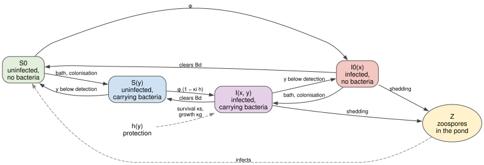
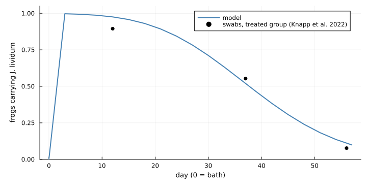
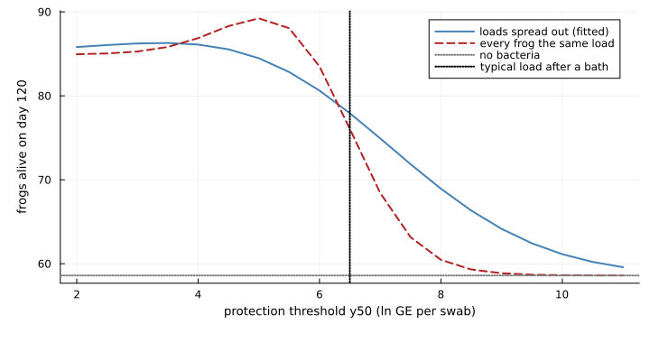

Does it matter that frogs carry different amounts of a protective bacterium?
- The question
- The model
- What the field trial says
- Does the spread of bacterial loads matter?
- Tolerance and resistance pull $R_0$ apart
- What the tutorial shows
- Limits
- References
[!NOTE]
Models in this tutorial
Model Source Category API page Two-trait IPM of Bd and bacterial load, BacteriaIPMProblemthis package, on Wilber et al. 2016 (Bd) and 2017 (zoospore pool) new api/bacteria_ipm.mdFit to the joint loads of a field trial, KnappJointModelthis package; data of Knapp et al. 2022 new (new fit) api/bacteria_ipm.mdCategories: published models reimplement a paper’s equations and are checked against it; modified models add structure to a published model; new models are new structure. Results from modified and new models are not published results.
The question
Probiotic baths give frogs a skin bacterium that makes an antifungal compound. In the package’s other microbiome models a treated frog is either protected or not (treated/untreated layer), or carries an abundance of the bacterium that acts on a single Bd load equation. But frogs do not take up the same amount of bacteria from a bath, the bacteria decline at different rates on different frogs, and how well they protect is thought to depend on how many there are: Becker et al. (2009) report that “a threshold violacein concentration of about 18 μM on a salamander’s skin prevents mortality”. If protection has a threshold, the spread of bacterial loads among frogs may matter as much as their average.
This tutorial uses a model in which each frog carries two continuous traits, its Bd load and the load of the bacterium Janthinobacterium lividum, and asks:
- what the one field trial with both loads measured says about the bacteria;
- whether the spread of bacterial loads among frogs changes how many survive;
- how protection that acts on survival (tolerance) and protection that acts on Bd growth (resistance) change the spread of Bd ($R_0$).
using Chytridiomycosis, Plots, Printf
include("../diagram.jl")
default(linewidth = 2, size = (720, 380), legendfontsize = 8, guidefontsize = 9,
titlefontsize = 10, left_margin = 4Plots.mm, bottom_margin = 4Plots.mm)
C = Chytridiomycosis
nothingThe model
Each frog carries a Bd load $x$ (ln zoospore equivalents per swab) and a load $y$ of J. lividum (ln genomic equivalents per swab). Frogs are uninfected or infected, and carry the bacteria or not, so there are four classes; the pond holds zoospores $Z$. One step is 3 days, as in Wilber et al. (2016).

An infected frog at $(x, y)$ survives a step with probability $s$, clears Bd with probability $l$, and otherwise moves to $(x', y')$:
\[\begin{aligned} \operatorname{logit} s(x, y) &= b_{00} + b_{10} x + \kappa_s h(y), \\ \operatorname{logit} l(x, y) &= b_{02} + b_{12} x + b_{22} T + \kappa_l h(y), \\ x' &\sim \mathrm{Normal}\!\left(b_{01} + b_{11} x + b_{21} T - \kappa_g h(y),\ v_{01} e^{2 c_{01} x}\right), \\ y' \mid x' &\sim \mathrm{Normal}\!\left(y - \delta \Delta t - \rho x + r \tfrac{\sigma_y}{\sigma_x}(x' - \mathrm{E}\,x'),\ \sigma_y^2 (1 - r^2)\right), \end{aligned}\]
with the protection given by the bacteria a smooth threshold
\[h(y) = \frac{1}{1 + e^{-(y - y_{50})/w}}.\]
A frog whose $y'$ falls below 0 (1 genomic equivalent) has lost its bacteria. Uninfected frogs are infected with probability $\phi$ per step (times $1 - \kappa_i h(y)$ if they carry bacteria), starting at a Bd load drawn from the initial-load distribution of Wilber et al. (2016). In the pond, $\phi = 1 - e^{-\Lambda \Delta t}$ with $\Lambda = \beta_0 \ln(Z + 1) + \beta_1 I$, and $Z' = \nu(T) Z + \mu_A \sum e^x n(x)$ over infected frogs (Wilber et al. 2017). A bath gives a fraction of all frogs a fresh load $y \sim \mathrm{Normal}(\mu_b, \sigma_b)$. With every $\kappa$, $\rho$ and $r$ zero, the Bd side is exactly the Wilber et al. (2016) model.
| Symbol | Meaning | Value |
|---|---|---|
| $b_{00}, b_{10}$; $b_{01}, b_{11}, b_{21}, v_{01}, c_{01}$; $b_{02}, b_{12}, b_{22}$ | Bd survival, growth and clearance | Wilber et al. 2016 (compendium) |
| $\beta_0, \beta_1, \mu_A, \nu(T)$ | transmission, shedding, zoospore survival | Wilber et al. 2017 (compendium) |
| $\delta$ | decline of $y$ per day | fitted below (half-life about 4 days) |
| $\sigma_y$ | SD of the change in $y$ per step | fitted below |
| $\mu_b, \sigma_b$ | $y$ just after a bath | fitted below |
| $y_{50}, w$ | protection threshold and width | illustrative ($\ln 100$, 0.5) |
| $\kappa_s, \kappa_g, \kappa_l, \kappa_i$ | protection of survival, growth, clearance, infection | illustrative (2, 1, 0, 0) |
| $\rho, r$ | effect of Bd on the bacteria; correlation | 0 (no published support) |
| $T$ | water temperature | 15 °C here |
What the field trial says
In Knapp et al. (2022), subadult Rana sierrae in Dusy Basin were treated with itraconazole, bathed in J. lividum on days 0 and 1, released into the pond and swabbed on days 12, 37 and 56. Frogs were marked by group, not individually, so a frog’s loads cannot be followed from one visit to the next. What the swabs give is the joint distribution of the two loads in the treated group on each day, and that is what the model is fitted to (KnappJointModel): from the day-0 swabs and a bath, with a constant infection probability per step from the pond.
m = KnappJointModel(; coupled = false)
fit = maximum_likelihood(m; starts = 1, iters = 1500)
e = fit.estimates
@printf("log-likelihood %.2f over %d swabs\n", fit.loglik, fit.n)
@printf("J. lividum half-life %.2f days; just after the bath ln GE %.2f (SD %.2f); σy = %.2f per step\n",
log(2) / e.decline, e.bath_mean, e.bath_sd, e.σy)
@printf("infection probability %.2f per 3 days; %.0f ITS copies per zoospore equivalent\n",
e.φ, e.copies_per_ze)log-likelihood -540.40 over 143 swabs
J. lividum half-life 4.68 days; just after the bath ln GE 6.48 (SD 2.17); σy = 0.15 per step
infection probability 0.51 per 3 days; 63 ITS copies per zoospore equivalentThe bacteria halve in four to five days, and their loads spread out as they decline. The half-life and the noise $\sigma_y$ are not separately well determined: the best fit found by scripts/bacteria_ipm_knapp_fit.jl (six starts) has a half-life of 4.07 days and $\sigma_y = 0.29$ at log-likelihood −540.38, almost the same as this single start. With group-marked frogs, a slower decline with less noise and a faster one with more give nearly the same cross-sections. The model follows the share of frogs still carrying them:
_, sol = C._knapp_joint_solve(m, fit.x)
s = bacteria_ipm_summary(sol)
obs = Dict{Float64,Tuple{Int,Int}}()
for w in m.swabs
(w.day > 0 && !isnan(w.jl)) || continue
a, b = get(obs, w.day, (0, 0))
obs[w.day] = (a + (w.jl >= 1), b + 1)
end
days = sort(collect(keys(obs)))
plot(s.t, s.carrying; label = "model", color = :steelblue, xlabel = "day (0 = bath)",
ylabel = "frogs carrying J. lividum", ylim = (0, 1.05), legend = :topright)
scatter!(days, [obs[d][1] / obs[d][2] for d in days]; color = :black,
label = "swabs, treated group (Knapp et al. 2022)")
Does a frog’s J. lividum load slow its Bd? The coupled model (coupled = true) adds the growth effect $\kappa_g$ and its threshold $y_{50}$. The fit in scripts/bacteria_ipm_knapp_fit.jl profiles $\kappa_g$: fixed anywhere between −2 and 4, with the other parameters re-fitted, the log-likelihood stays within 0.6 of the uncoupled fit, so the joint loads give no evidence that more bacteria mean less Bd growth. (Its unconstrained maximum puts an implausibly large effect in the opposite direction on a few frogs with very many bacteria; Jani & Briggs (2014) also found Janthinobacterium rising with Bd in an infection experiment.) The protective effects below are therefore illustrative.
Does the spread of bacterial loads matter?
Take 100 frogs at 15 °C with 2 infected, bathed every 15 days, with illustrative protection ($\kappa_s = 2$, $\kappa_g = 1$). Compare frogs whose bacterial loads spread out as fitted with frogs that all carry the same load, for thresholds $y_{50}$ below, at and above the typical load just after a bath (ln GE 6.5):
p = BacteriaIPMParameters()
baths = [(day = d, coverage = 1.0) for d in 0:15:105]
left(q, b = baths) = bacteria_ipm_summary(solve(BacteriaIPMProblem(q; temperature = 15.0,
uninfected = 98, infected = 2, baths = b))).frogs[end]
none = left(C.with(p; κ_survival = 0.0, κ_growth = 0.0), ())
y50s = 2.0:0.5:11.0
spread = [left(C.with(p; y50)) for y50 in y50s]
same = [left(C.with(p; y50, bath_sd = 0.05, σy = 0.05)) for y50 in y50s]
plot(y50s, spread; label = "loads spread out (fitted)", color = :steelblue,
xlabel = "protection threshold y50 (ln GE per swab)", ylabel = "frogs alive on day 120")
plot!(y50s, same; label = "every frog the same load", color = :firebrick, linestyle = :dash)
hline!([none]; label = "no bacteria", color = :gray, linestyle = :dot)
vline!([p.bath_mean]; label = "typical load after a bath", color = :black, linestyle = :dot)
println("| Threshold y50 | Loads spread out | Every frog the same load | No bacteria |")
println("|---|---|---|---|")
for y in (4.0, 5.0, 6.5, 8.0, 9.5)
i = findfirst(==(y), y50s)
@printf("| %.1f | %.1f | %.1f | %.1f |\n", y, spread[i], same[i], none)
end| Threshold y50 | Loads spread out | Every frog the same load | No bacteria |
|---|---|---|---|
| 4.0 | 86.1 | 86.9 | 58.6 |
| 5.0 | 84.5 | 89.2 | 58.6 |
| 6.5 | 77.9 | 76.1 | 58.6 |
| 8.0 | 68.9 | 60.5 | 58.6 |
| 9.5 | 62.4 | 58.7 | 58.6 |
The spread helps or hurts depending on where the threshold is. When it is below the typical load, frogs that all carry the same load are all protected, while a spread pushes some frogs below the threshold. When it is above the typical load, frogs that all carry the same load are all unprotected, and only the spread puts some frogs above it. A model that gives every treated frog the same protection cannot show either effect, and where the threshold lies on the load axis is not known: Becker et al. (2009) measured violacein, not bacterial load, and the two were only weakly related ($r = 0.33$).
Tolerance and resistance pull $R_0$ apart
$R_0$ here counts the frogs one infected frog infects through the zoospore pool and directly (computed as in Wilber et al. 2017). Give every uninfected frog bacteria at the post-bath distribution, with protection acting on survival only or on Bd growth only:
pc = C._bacteria_pieces(p, IPMMesh2D(IPMMesh(:wilber2016; n = 50), IPMMesh(0.0, 14.0, 28)), 15.0)
function r0(q; carrying)
nx, ny = 50, 28
u0 = zeros(1 + ny + nx + nx * ny + 1)
u0[1] = 100 * (1 - carrying)
u0[2:1+ny] .= 100 * carrying .* pc.bath ./ sum(pc.bath)
basic_reproduction_number(BacteriaIPMProblem(q; temperature = 15.0, u0))
end
println("| Protection | No frog carrying | Half carrying | All carrying |")
println("|---|---|---|---|")
for (lab, q) in (("on survival only (κs = 2)", C.with(p; κ_growth = 0.0)),
("on Bd growth only (κg = 1)", C.with(p; κ_survival = 0.0)))
@printf("| %s | %.0f | %.0f | %.0f |\n", lab, r0(q; carrying = 0.0), r0(q; carrying = 0.5),
r0(q; carrying = 1.0))
end| Protection | No frog carrying | Half carrying | All carrying |
|---|---|---|---|
| on survival only (κs = 2) | 385 | 390 | 395 |
| on Bd growth only (κg = 1) | 385 | 341 | 297 |
Bacteria that let infected frogs live longer at the same load raise $R_0$, because those frogs keep shedding; bacteria that slow Bd growth lower it. A probiotic that works mainly by tolerance could save treated frogs while making the epidemic around them larger, the amplification that Barnett et al. (2026) propose for their field result.
What the tutorial shows
- The one field trial with both loads measured supports the bacterial dynamics, not the protection. J. lividum halves in four to five days after a bath and its loads spread out; whether frogs with more of it carry less Bd cannot be detected in these swabs.
- Variation among frogs matters when protection has a threshold. Whether the spread helps or hurts depends on where the threshold sits relative to the typical load, which is not known.
- How the bacteria protect changes what they do to the epidemic. Tolerance raises $R_0$; resistance lowers it.
Limits
- Illustrative protection. The threshold, its width and the effects are not estimated; the trial did not identify them.
- Group-marked frogs. Individual changes in the two loads, and their correlation, are not identified; the fit uses cross-sections only.
- One cohort, constant infection. The fit has no zoospore data and a fixed temperature.
- A species-level assay. The J. lividum qPCR does not distinguish the applied isolate from resident strains.
- No births. One season of adults, as in Wilber et al. (2016).
References
- Barnett et al. (2026) From protection to amplification: imperfect chytridiomycosis prophylaxis increases infections in wild amphibians. bioRxiv (preprint). doi:10.64898/2026.05.15.725113
- Becker MH, Brucker RM, Schwantes CR, Harris RN, Minbiole KPC (2009) The bacterially produced metabolite violacein is associated with survival of amphibians infected with a lethal fungus. Applied and Environmental Microbiology 75:6635–6638. doi:10.1128/AEM.01294-09
- Jani AJ, Briggs CJ (2014) The pathogen Batrachochytrium dendrobatidis disturbs the frog skin microbiome during a natural epidemic and experimental infection. Proceedings of the National Academy of Sciences 111:E5049–E5058. doi:10.1073/pnas.1412752111
- Knapp RA, Joseph MB, Smith TC, Hegeman EE, et al. (2022) Effectiveness of antifungal treatments during chytridiomycosis epizootics in populations of an endangered frog. PeerJ 10:e12712. doi:10.7717/peerj.12712
- Wilber MQ, Langwig KE, Kilpatrick AM, McCallum HI, Briggs CJ (2016) Integral projection models for host–parasite systems with an application to amphibian chytrid fungus. Methods in Ecology and Evolution 7:1182–1194. doi:10.1111/2041-210X.12561
- Wilber MQ, Knapp RA, Toothman M, Briggs CJ (2017) Resistance, tolerance and environmental transmission dynamics determine host extinction risk in a load-dependent amphibian disease. Ecology Letters 20:1169–1181. doi:10.1111/ele.12814